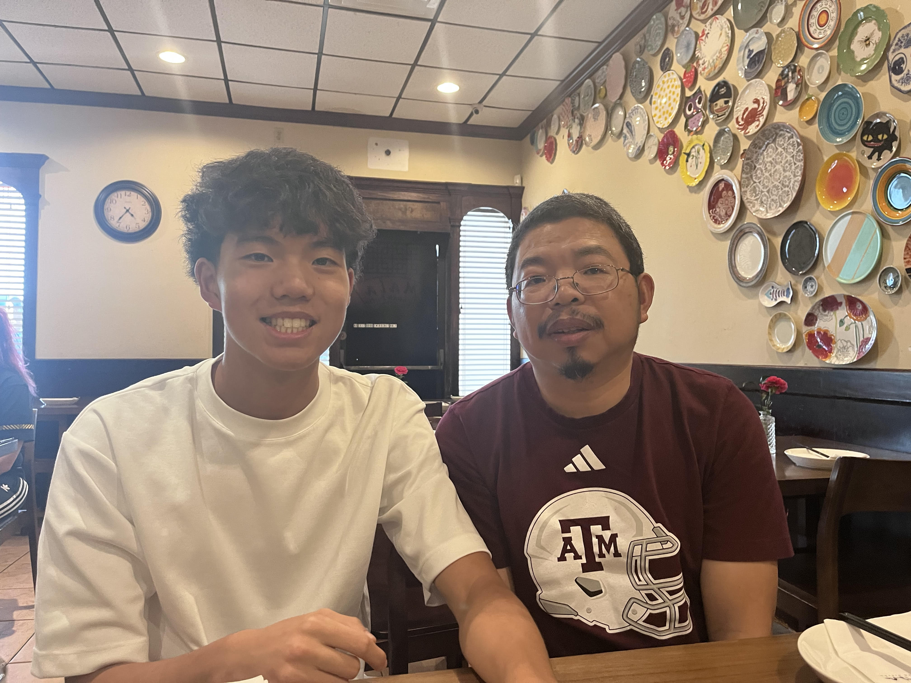
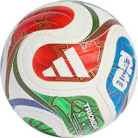

I'm a senior at College Station High School, and I spend my days juggling AP classes, soccer practice, and the occasional surprise homework assignment. I have taken more than 10 AP courses, and I can confidently say there is no better way to learn time management than balancing tests with team drills. When I am not on the field, I’m usually building small web projects or experimenting with code to make things that are actually fun to use. I enjoy turning technical ideas into simple, real-world tools, especially when they make someone's life a little easier. Outside of classes and soccer, I am active in Student Council, Leo Club for volunteering, and Investment Club, and next year I’ll be joining BPA (Business Professionals of America). Computer science is my favorite mix of logic and creativity — it is where I get to solve problems and make things look good at the same time. I just started a Texas A&M internship, and I’m excited to learn, grow, and be part of something real. I care about communication and teamwork, and I try to bring that energy to both my soccer team and my coding projects. Long term, I want to keep growing as a developer and athlete, and hopefully keep finding ways to improve my skills without losing sleep.
Sam's favorite soccer team
Barcelona OfficialSam's favorite video game
Valorant OfficialSam's ethnicity
China Wiki PageLeader on and off the field.
Texas 5A Division I Recognition.
Helped lead team with 10 assists.
Pursuing collegiate soccer opportunities.

I build web pages, apps, and small tools that actually feel like something a person would enjoy using. My toolbox includes HTML, CSS, JavaScript, React, and Python, and I enjoy finding ways to make code neat and easy to maintain. The Texas A&M internship taught me how real software teams work, and I learned quickly that good communication matters as much as good code. I like keeping things practical: design that looks nice, features that work well, and code that doesn't break when I least expect it to. Working on soccer and software has taught me how to stay disciplined and calm when the schedule gets crowded. I prefer to solve problems by asking the right questions first, then writing code that is straightforward instead of overly clever. I’m always looking for new ways to learn, whether that means a new library, a new project, or a better workflow. In the end, I want to build software that helps people and keeps me excited to keep improving.
Compete at the next level.
Continue learning full-stack development.
Challenge myself in college and beyond.
Build technology that helps people.